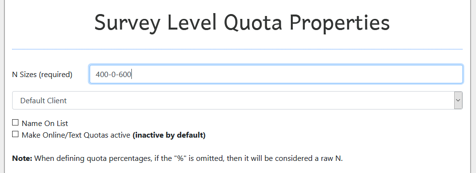
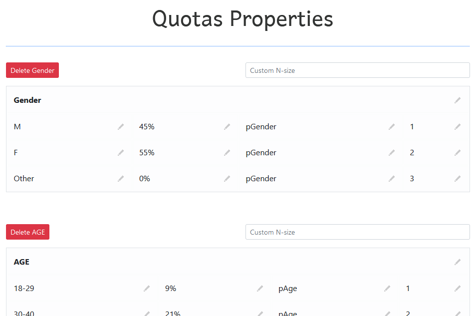
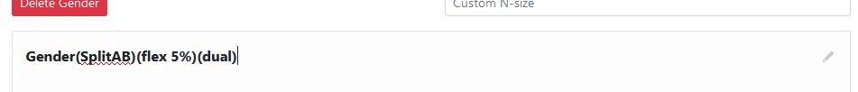
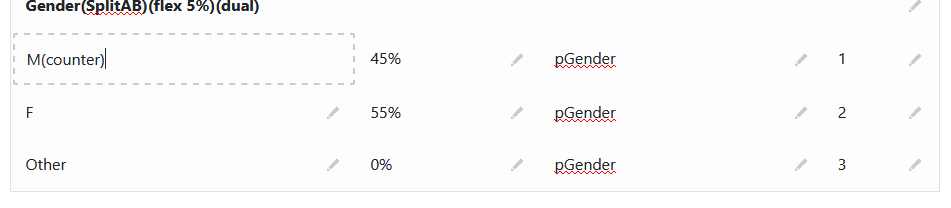
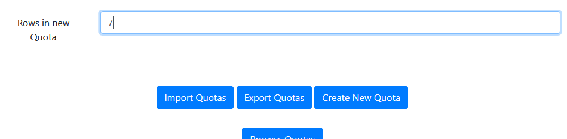
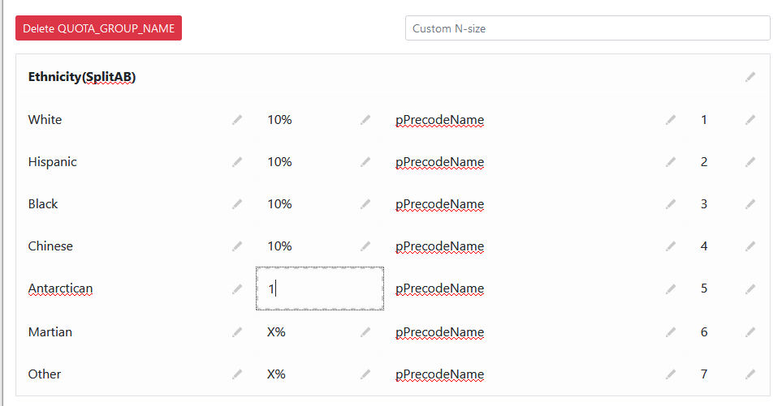
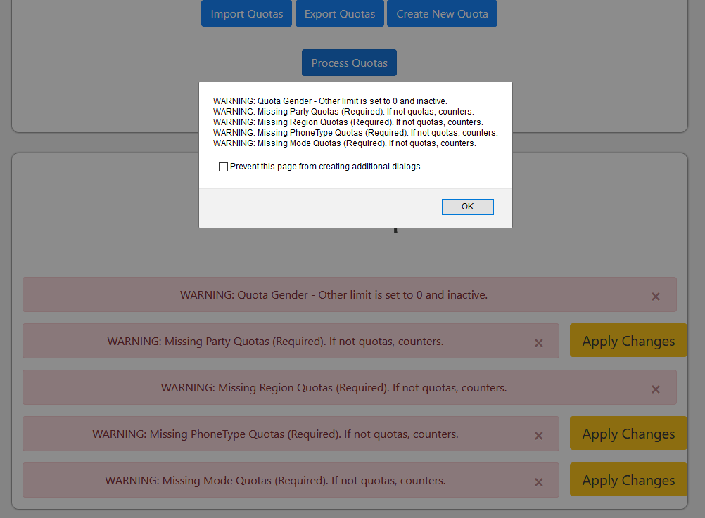

Open Template
Bubbleless can do column level replacements and record level deletions given a column of interest.
Inorder to work, data is expected to be formatted in this way:
| Cell Name |
| Find |
Replacement |
| Cell2 Name |
| Find |
Replacement |
| Find |
Replacement |
Here is an example with real data:
| F |
| Landline |
1 |
| Cell |
2 |
| AW |
| 18-34 |
1 |
| 35-44 |
2 |
| 45-54 |
3 |
| 55-64 |
4 |
| 65-999 |
5 |
| DELETE A |
| John |
| Emily |
| Lucas |
| STOP DELETE |
| DELETE AZ |
| 2 |
| stop delete |
After you process a sample, Bubbleless can take that data and arrange it into quotas for use on LS.
If you scroll down through the data visualizations, you'll end up at the Survey Level Quota Properties section.

The N Sizes value is required. This is used to calculate raw n-sizes out of the percentages for the quotas.
If there is only one mode, you only need to enter one number, regardless of mode. For multiple modes, the format is a raw number for each mode separated by a dash: Phone-Email-Text
Modes that appear later don't need to be included (e.g. phone and email surveys only need 2 n-sizes). In any other case, irrelevant modes should be 0. The image above describes a project of 1000n with a phone mode of n=400 and a texting mode of n=600.
Note: Keep in mind whether the projects will be on the same link or not. In the above example, if the project were separated into two surveys, the generated csv would be incorrect. You would need to generate two quota files in this case, one for each mode; with corresponding n-sizes.
Everything else should be set according to the project specifications, usually on Trello.
The next section, Quota Properties, is an overview of the flags that were generated from the sample.

At this point, every value in the table is either defaulted or pulled from the sample values that were pasted in earlier.
The first row in each table is the quota name. This is where you will put in most of the commands for the program to read (Flex, splits, mode).

The Custom N-size field is for calculating a quota using a different N-size. These apply individually to the quota it is attached to.
The following rows represent the actual quotas that are used for fielding and keeping track of completes. The first column is the name of the quota value that is being tracked- this is where you can mark a row as a counter or inactive by adding "(counter)" or "(inactive)" to the name.

Check the quota sheet and make sure the values in the second column match up with the values in the quota sheet. If they don't match, you can change it manually by clicking and typing in the correct value.
You will want to check that the codes in the fourth column match with your coding as well. The third column is auto-generated based on the name of the quota. This can usually be left alone.
If there is a redundant or unnecessary quota, you can delete it by clicking the big red "Delete" button located above each quota.
If there is anything missing, you can add new quotas using the "Create New Quota" button. You'll want to enter the number of quota values for the quota before you click the button. The following setting will add a quota with 7 values in it:

Note that you will have to change every value manually when you insert a new quota. In this case, the third column will be a generic value, so you can either:
Contact the programming team to get the name of the precode that they created to track this quota
OR
Add in a question code yourself, by prepending a "p" to the quota name and filling in each cell with it

When everything is done and the table values are correct, you can save the table for later use by clicking the "Export Quotas" button. This file can be uploaded at a later time using the "Import Quotas" button to retrieve the values you have now, without needing to reupload the sample.
The next step is processing the quotas. When you click the "Process Quotas" button, Bubbleless will check every quota against client-specific rules.
You will be alerted to issues that Bubbleless finds and given an option to apply suggested changes.

Make sure the suggested changes are in line with project requirements. If we have no way of tracking party for example (both in survey and in sample), adding a party quota to the generated file cause an error when uploading to LS.
When all the checks are done and required changes are applied, clicking "Acknowledge Warnings and Download Quotas" will download a csv file that can be uploaded to LS.